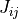
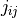
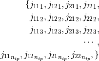

Implementation¶
Definitions¶
 - component of the Jacobian matrix  - component of the inverse of the Jacobian matrix
The numerical integration should be efficiently vectorized by grouping the elements of the same type in a single call to the corresponding function that will perform the numerical integration. The required parameters for this integration are:
inverse of the Jacobian calculated at each integration point
Constitutive relations at each integration point
For elements such as cylindrical, conical or with double curvature, the radius or radii at each integration point
Each element will pass an array with the inverse of the Jacobian for each integration point, e.g. for a shell element:
